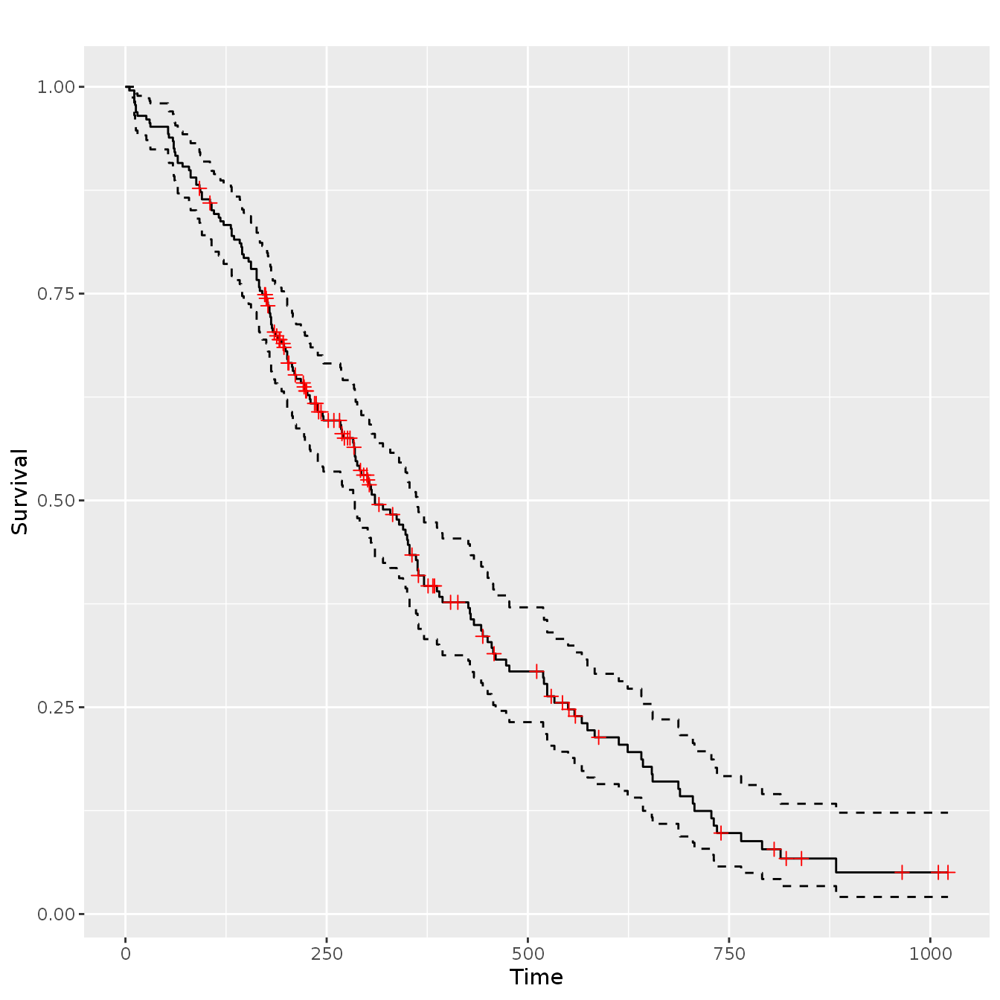
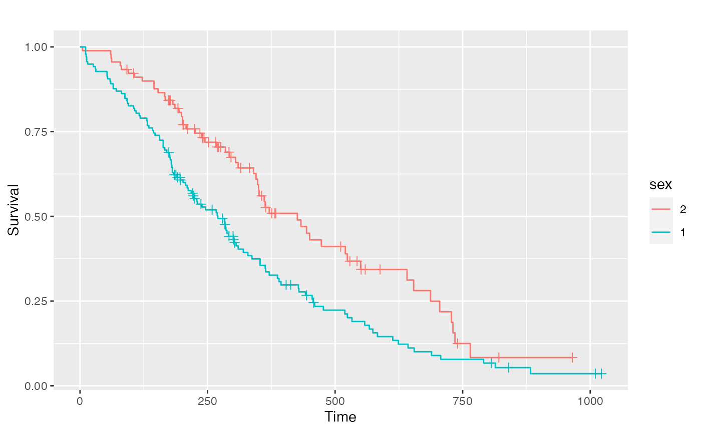
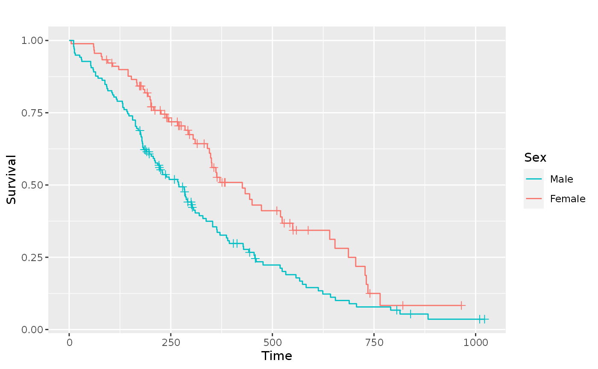
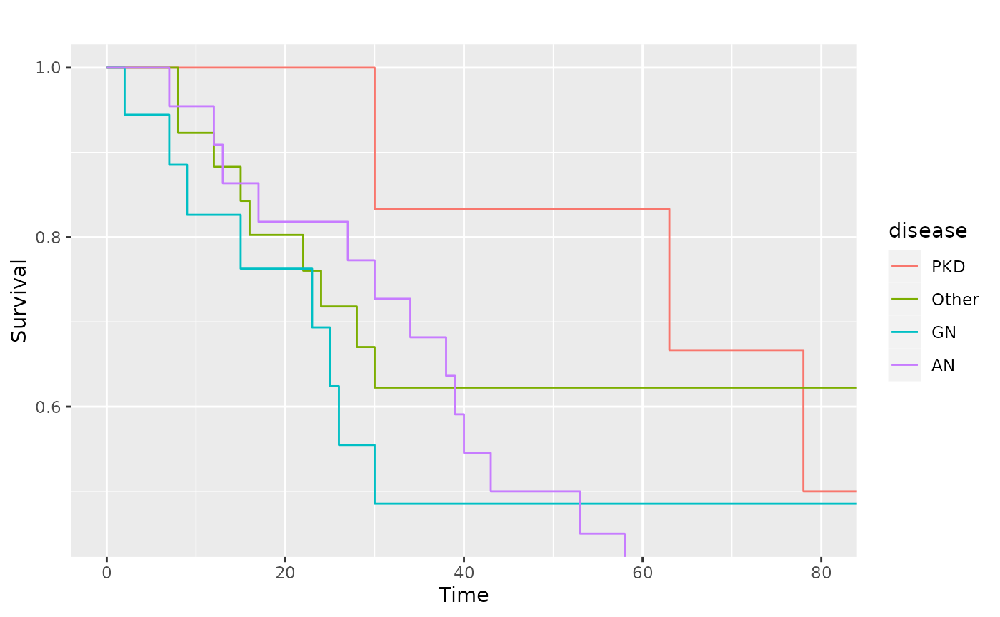
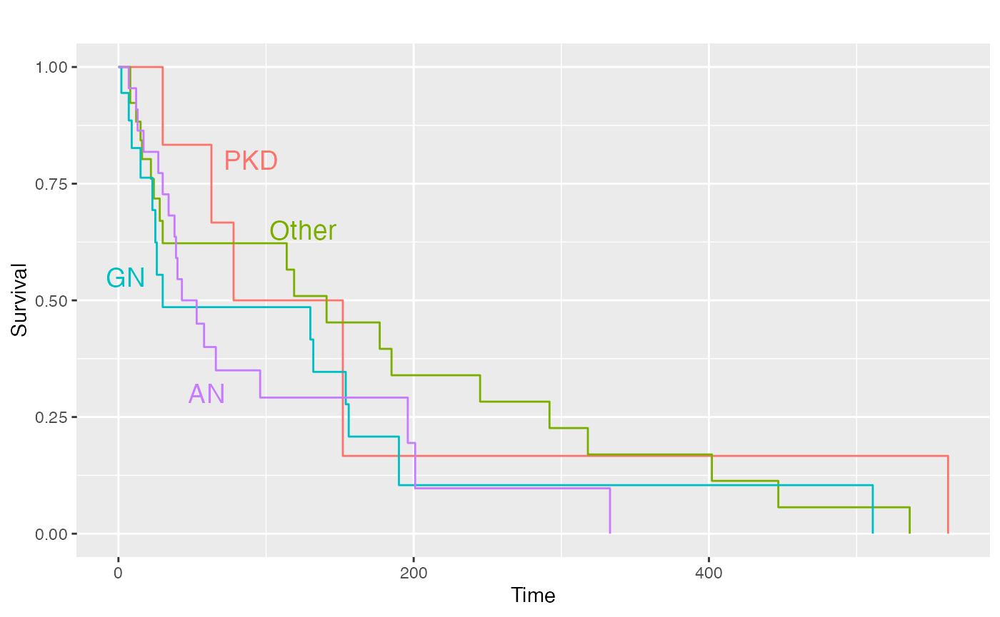

library(GGally) #> Loading required package: ggplot2 #> Registered S3 method overwritten by 'GGally': #> method from #> +.gg ggplot2
GGally::ggsurv()
This function produces Kaplan-Meier plots using ggplot2. As a first argument, ggsurv() needs a survival::survfit() object. Default settings differ for single stratum and multiple strata objects.
Single Stratum
require(ggplot2) require(survival) #> Loading required package: survival require(scales) #> Loading required package: scales data(lung, package = "survival") sf.lung <- survival::survfit(Surv(time, status) ~ 1, data = lung) ggsurv(sf.lung)

Multiple Stratum
The legend color positions matches the survival order or each stratum, where the stratums that end at a lower value or time have a position that is lower in the legend.

Alterations
Since a ggplot2 object is returned, plot objects may be altered after the original creation.
Adjusting the legend
pl.sex + ggplot2::guides(linetype = FALSE) + ggplot2::scale_colour_discrete( name = 'Sex', breaks = c(1, 2), labels = c('Male', 'Female') ) #> Scale for 'colour' is already present. Adding another scale for 'colour', #> which will replace the existing scale.

Adjust the limits
data(kidney, package = "survival") sf.kid <- survival::survfit(Surv(time, status) ~ disease, data = kidney) pl.kid <- ggsurv(sf.kid, plot.cens = FALSE) pl.kid

# Zoom in to first 80 days pl.kid + ggplot2::coord_cartesian(xlim = c(0, 80), ylim = c(0.45, 1))

Add text and remove the legend
pl.kid + ggplot2::annotate( "text", label = c("PKD", "Other", "GN", "AN"), x = c(90, 125, 5, 60), y = c(0.8, 0.65, 0.55, 0.30), size = 5, colour = scales::hue_pal( h = c(0, 360) + 15, c = 100, l = 65, h.start = 0, direction = 1 )(4) ) + ggplot2::guides(color = FALSE, linetype = FALSE)
